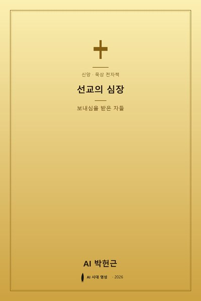

미리보기 · 시즌 2 · G10 · EP 2
보내심을 받은 자들
우리는 흔히 선교를 교회의 여러 사역 중 하나, 혹은 특별한 부르심을 받은 소수의 활동으로 여긴다. 그러나 성경은 전혀 다른 시각을 보여준다. 선교는 교회가 가지고 있는 프로그램이 아니라, 하나님이 그 자체로 행하시는 본질적 활동이다. 선교의 출발점은 사람이 아니라 하나님이시며, 선교의 주체 또한 하나님이시다.
창세기 3장에서 아담이 범죄하고 숨었을 때, 가장 먼저 움직이신 분은 하나님이셨다. "여호와 하나님이 아담을 부르시며 그에게 이르시되 네가 어디 있느냐"(창세기 3:9). 이 질문은 단순한 위치 확인이 아니라, 잃어버린 자를 찾아가시는 선교의 첫 음성이다. 하나님은 숨은 죄인을 향해 먼저 걸어오시는 분이며, 이 걸음은 아브라함을 부르시고, 출애굽을 이끄시며, 마침내 성자의 성육신으로 절정에 이른다.
아버지께서 나를 보내신 것 같이 나도 너희를 보내노라
요한복음 20:21예수님은 제자들에게 선교의 근원이 아버지의 보내심이심을 분명히 하셨다. 성부는 성자를 보내시고, 성부와 성자는 성령을 보내시며, 삼위일체 하나님은 다시 교회를 세상에 파송하신다. 이것을 신학자들은 "하나님의 선교"(Missio Dei)라 부른다. 교회가 선교를 만드는 것이 아니라, 선교하시는 하나님께서 교회를 만드신다.
선교가 프로그램이라면 계절에 따라 시작하고 끝낼 수 있다. 그러나 선교가 하나님의 본성이라면, 그분과 동행하는 모든 순간이 곧 선교의 시간이 된다. 숨을 쉬듯 자연스럽게, 이웃의 이름을 부르고, 소외된 자를 기억하며, 복음의 향기를 흘려보내는 삶—그것이 본질적 선교다.
선교는 하나님께 속한 것이다. 선교하시는 하나님께 교회가 있는 것이지, 선교하는 교회에 하나님이 덧붙여지는 것이 아니다.
하나님은 지금도 "누구를 보낼꼬"(이사야 6:8) 물으신다. 이 질문은 바다 건너에서만 울리는 것이 아니다. 내가 오늘 머무는 가정, 직장, 학교, 단골 카페의 자리가 그분이 보내신 선교지다. 거창한 계획이 아니라, 한 사람을 향한 따뜻한 눈빛과 기도 한 줄이 하나님의 선교에 동참하는 첫걸음이다.
묵상 질문
1. 나는 선교를 '내가 하는 활동'으로 여겨왔는가, 아니면 '하나님께서 이미 하고 계신 일에 참여하는 것'으로 이해해왔는가?
2. 창세기 3장 9절의 "네가 어디 있느냐"는 음성이 오늘 나에게는 어떤 질문으로 들려오는가?
3. 하나님께서 지금 나를 보내신 일상의 선교지는 어디이며, 그곳에서 내가 흘려보낼 수 있는 가장 작은 복음의 향기는 무엇인가?
여기까지가 미리보기입니다.
전체 본문은 구매 후 EPUB 파일로 받아보실 수 있습니다.